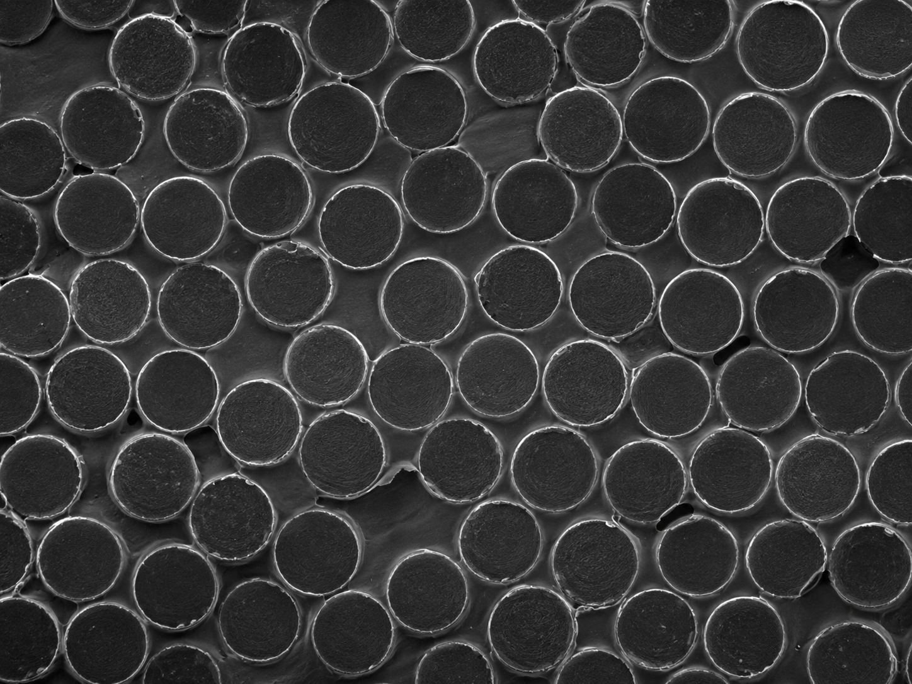
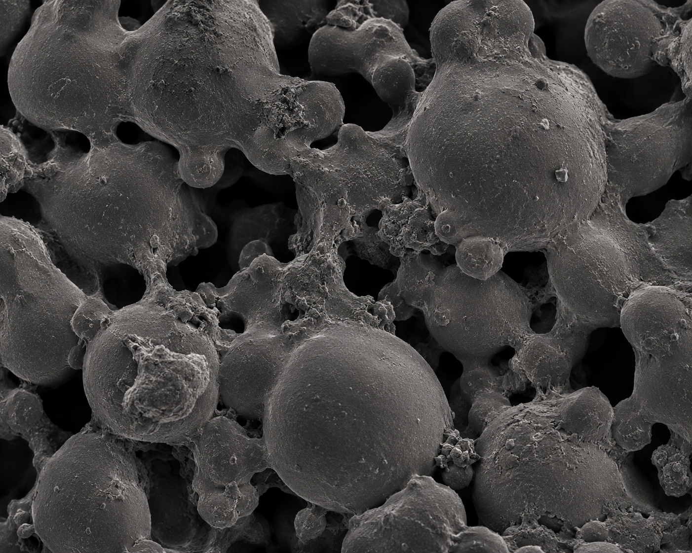
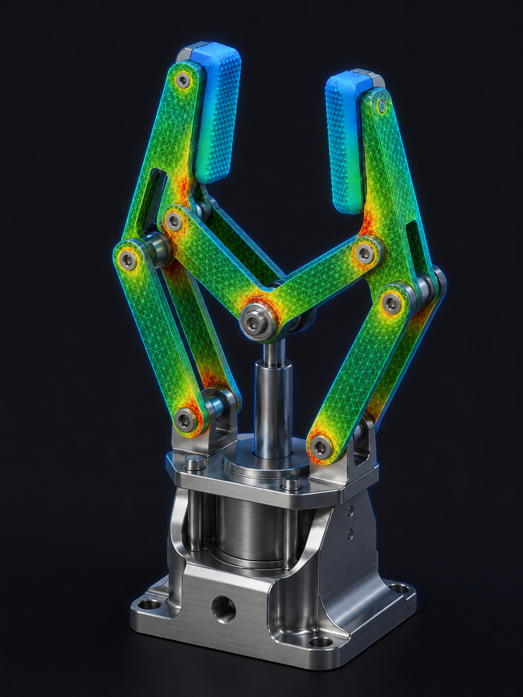
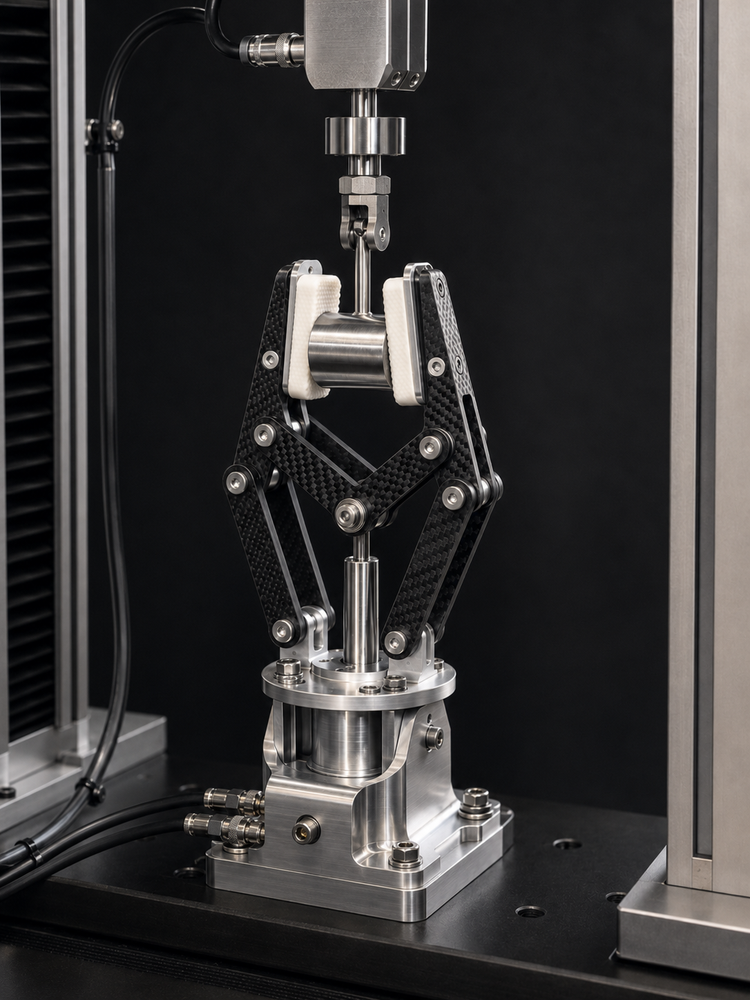

Development & Analysis
From initial concept through CAD modelling, FEA simulation, and physical load testing — the full development pipeline for the modular hybrid gripper.
Design Requirements
The gripper must handle parts ranging from 10–80 mm diameter, sustain a grip force of up to 50 N, and integrate with a standard UR5-compatible flange. Finger profiles are swappable without replacing the actuator body.

CAD Modelling
All components were modelled in SolidWorks 2023. The finger body is parametric — swapping material in the simulation requires only a material-property override, not a new model.


Modular Joint Interface
A keyed bayonet-style interface allows each finger to be locked and released with a 90° twist. The interface surface carries shear load through four radial lugs machined into the finger base.
Actuator Body
The actuator housing remains constant across all three material variants. Finger geometry changes only affect the replaceable finger element, keeping the comparison controlled and the cost of switching low.
Contact Geometry
V-groove contact faces distribute load across a larger area than flat-jaw designs. The angle is set at 120° to centre cylindrical parts passively under grip force.
Material Property Comparison
| Property | Unit | Al 6061-T6 | CFRP (UD) | PA12 Nylon (SLS) |
|---|---|---|---|---|
| Density | g/cm³ | 2.70 | 1.55 | 1.01 |
| Tensile Strength | MPa | 310 | 600+ | 48 |
| Yield Strength | MPa | 276 | — | 43 |
| Young's Modulus | GPa | 69 | 70–105 | 1.6 |
| Thermal Expansion | µm/m·°C | 23.6 | 0–2 | ~100 |
| Machinability | — | Excellent | Difficult | SLS only |
| Relative Cost | — | Low | High | Medium |
Microstructure Analysis
Each candidate's mechanical behaviour traces back to its microstructure — how grains, fibres, or sintered particles are arranged and bonded. This governs strength, anisotropy, and how the part ultimately fails.
Aluminum 6061-T6
Wrought, precipitation-hardened alloy. The T6 temper precipitates fine, coherent Mg₂Si particles through equiaxed aluminium grains; these pin dislocations and raise yield strength. The structure is largely isotropic, giving uniform, predictable mechanical response.
- StructureEquiaxed grains
- StrengtheningMg₂Si precipitates
- AnisotropyLow
Carbon Fiber (CFRP)

Continuous carbon fibres bound in a polymer matrix. Load travels mainly along the fibre direction, so stiffness and strength are strongly anisotropic. A high fibre volume fraction (~60%) and good fibre–matrix adhesion are critical to its performance.
- StructureFibre + matrix
- Fibre fraction~60% vol
- AnisotropyHigh (directional)
PA12 Nylon (SLS)

Semi-crystalline polyamide built by fusing powder layer by layer. Incomplete particle coalescence leaves residual porosity and partially-melted boundaries — the dominant crack-initiation sites and the reason SLS PA12 is weaker and more variable than moulded nylon.
- StructureSintered particles
- Porosity~3–5%
- AnisotropyBuild-direction
Takeaway: the aluminium's precipitate-strengthened isotropic grains and CFRP's aligned fibres both resist the grip-load stress state well, while PA12's porous sintered structure concentrates stress at particle boundaries — consistent with its low factor of safety.
Material Selection Matrix
A weighted decision matrix scores each material against the criteria that matter for this gripper. Each criterion is scored 1–5 (5 = best) and multiplied by its weight; the highest weighted total wins.
| Criterion | Weight | Al 6061-T6 | CFRP | PA12 |
|---|---|---|---|---|
| Strength-to-weight | 30% | 3 | 5 | 2 |
| Stiffness | 20% | 4 | 5 | 1 |
| Factor of safety | 20% | 4 | 5 | 1 |
| Manufacturability | 15% | 5 | 2 | 4 |
| Cost | 15% | 4 | 2 | 3 |
| Weighted total | 100% | 3.85 | 4.10 | 2.05 |
CFRP scores highest (4.10 / 5), driven by its dominant strength-to-weight and stiffness. Aluminium (3.85) is a close, lower-cost second; PA12 (2.05) is unsuitable for structural use. Re-weighting toward cost would narrow the CFRP–aluminium gap.
Failure Mode & Effect Analysis
FMEA identifies how the gripper could fail, the consequence of each failure, and its risk priority. Severity (S), Occurrence (O), and Detection (D) are each rated 1–10; Risk Priority Number (RPN) = S × O × D.
| Failure Mode | Effect | Cause | S | O | D | RPN | Mitigation |
|---|---|---|---|---|---|---|---|
| Finger fracture at lug root | Loss of grip, dropped workpiece | Stress concentration; under-strength material (PA12) | 9 | 4 | 3 | 108 | Add fillet radius; specify CFRP / Al for production |
| Pivot pin shear | Linkage collapse, gripper inoperable | Overload beyond rated grip force | 8 | 3 | 4 | 96 | Stainless pins sized to FoS ≥ 2; force limiter |
| Grip-pad wear / slip | Reduced friction, part mispositioning | Abrasive wear of nylon contact pad | 5 | 6 | 5 | 150 | Replaceable pads; periodic inspection interval |
| Bayonet interface loosening | Finger detaches during operation | Vibration; detent not fully engaged | 7 | 3 | 4 | 84 | Spring-loaded detent; assembly check on changeover |
Highest risk is grip-pad wear (RPN 150) — frequent but low-severity — handled by making the pads a replaceable consumable. Finger fracture carries the highest severity (9) and is mitigated through material choice and a generous lug-root fillet.
Finite Element Analysis
Static structural FEA was run in SolidWorks Simulation. Boundary conditions were identical for all three material variants to isolate the effect of material properties.

Boundary Conditions
The finger base (bayonet interface) was fixed. A 50 N distributed load was applied across the V-groove contact faces at the fingertip. A secondary 15 N side-load was applied orthogonal to the grip axis to simulate workpiece slip.
Values are first-order analytical estimates from a cantilever-beam idealization (L ≈ 90 mm, ≈ 10 × 8 mm effective section, Kt ≈ 2.3 at the lug root, 50 N grip + 15 N side-load), pending full SolidWorks Simulation validation. PA12's predicted peak stress exceeds its 48 MPa tensile strength, so it yields below the 50 N requirement — suitable for prototyping only.
Fatigue & Wear
A gripper finger sees cyclic grip-and-release loading — often millions of cycles per service year — so fatigue endurance, not just static strength, governs service life. Wear at the contact face is the other life-limiting factor.
Aluminium 6061-T6 is non-ferrous and has no true fatigue endurance limit, so its strength is quoted at a finite life (~5×10⁸ cycles). CFRP has excellent fatigue resistance along the fibre direction. PA12's porous sintered structure makes it the weakest under cyclic load.
| Material | Fatigue strength | Wear resistance |
|---|---|---|
| Al 6061-T6 | ~96 MPa @ 5×10⁸ cyc | Good |
| CFRP | High (directional) | Excellent |
| PA12 Nylon | Low | Moderate (self-lubricating) |
The V-groove pads abrade against gripped parts, so the design makes them a replaceable consumable — finger service life is set by fatigue of the structural body, not pad wear.
Physical Load Testing
Prototypes in Al 6061-T6 and SLS PA12 were manufactured for destructive and non-destructive load testing. CFRP prototyping was cost-prohibitive at this scale; simulation results are used for that variant.
A calibrated load cell measured actual grip force at the contact face while a dial gauge recorded displacement at the fingertip. The aluminium prototype was tested non-destructively in 10 N increments across the full 0–60 N range; the PA12 prototype — predicted to yield below the 50 N target — was loaded to failure to establish its actual limit.

Business Case & LEAN
Material choice is ultimately an economic decision. This section compares per-unit cost, maps the modular design to the seven LEAN wastes, and estimates return on investment.
| Cost item (per finger, 10-unit batch) | Al 6061-T6 | CFRP | PA12 (SLS) |
|---|---|---|---|
| Material | ฿180 | ฿1,200 | ฿120 |
| Fabrication | ฿650 (CNC) | ฿2,400 (layup + finish) | ฿380 (print) |
| Total per finger | ฿830 | ฿3,600 | ฿500 |
Illustrative costs at a 10-unit batch. Aluminium is the cost-rational structural choice; CFRP's ~4× premium is justified only where weight is critical. PA12 is cheapest but non-structural — prototyping only.
Attacking the 7 LEAN Wastes
| LEAN Waste | How the modular gripper reduces it |
|---|---|
| Defects | V-groove self-centring reduces mis-picks and scrap. |
| Waiting | Tool-free finger swap (< 2 min) cuts changeover downtime. |
| Overproduction | Fast changeover makes small, on-demand batches viable. |
| Transport | One gripper serves many parts — fewer fixture moves. |
| Inventory | One actuator body + a few finger SKUs replaces many dedicated grippers. |
| Motion | Passive centring removes re-grip and re-alignment motions. |
| Over-processing | One parametric finger model avoids redundant re-tooling. |
Energy saving
Lighter fingers lower actuator load and cycle energy — an estimated ฿12,000 / year per robot.
Defect reduction
Self-centring grip and fewer mis-picks cut rework and scrap by an estimated ฿150,000 / month line-wide.
Downtime saving
Faster changeover and replaceable pads reduce maintenance downtime by an estimated ฿25,000 / maintenance cycle.
Against the modular gripper tooling investment, the combined savings give an estimated payback of ~3.5 months. Figures are illustrative estimates for the business case, pending plant-specific data.
Discussion & Recommendation
CFRP — Best Structural Performance
Carbon fibre delivers the highest factor of safety and lowest displacement under load. Its low density reduces tool-change inertia. The trade-off is material and fabrication cost, plus anisotropic behaviour that requires careful fibre orientation control.
Al 6061-T6 — Best All-Round Value
Aluminium meets all structural requirements with a comfortable safety margin and is easily CNC-machined in-house. For production quantities above ~20 units, it is the most economically rational choice.
PA12 Nylon — Best for Rapid Iteration
SLS nylon enables geometry changes overnight without tooling cost, making it ideal for early-stage prototyping. It does not meet the structural requirements for sustained 50 N operation and should not be used in production.